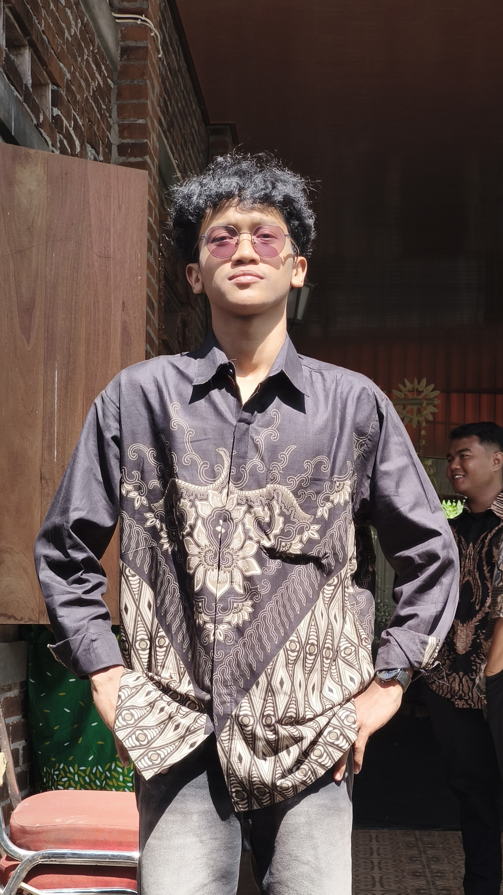

Mahasiswa Manajemen Informasi Komunikasi, STMM
Saya membuat konten, mengedit video, dan sedang belajar bagaimana sebuah website bisa tampil di internet.
Saya mahasiswa semester 3 Program Studi Manajemen Informasi Komunikasi (MIK) di STMM. Saya suka mengubah ide menjadi konten yang bisa dilihat orang lain, mulai dari merekam, menyusun gambar, sampai mengedit. Saat ini saya sedang belajar Cloud Computing, dan halaman ini adalah hasil praktik mempublikasikan website lewat GitHub Pages.